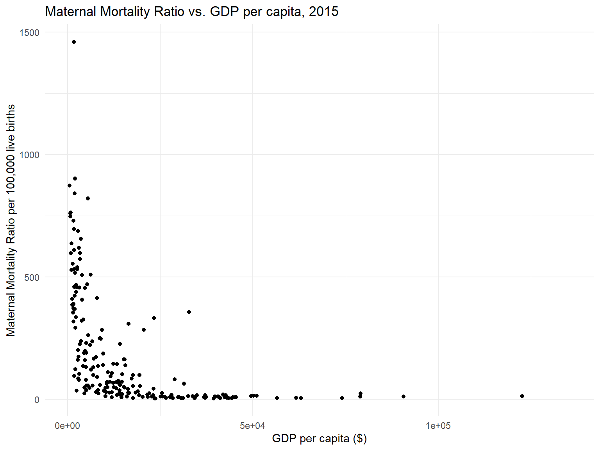
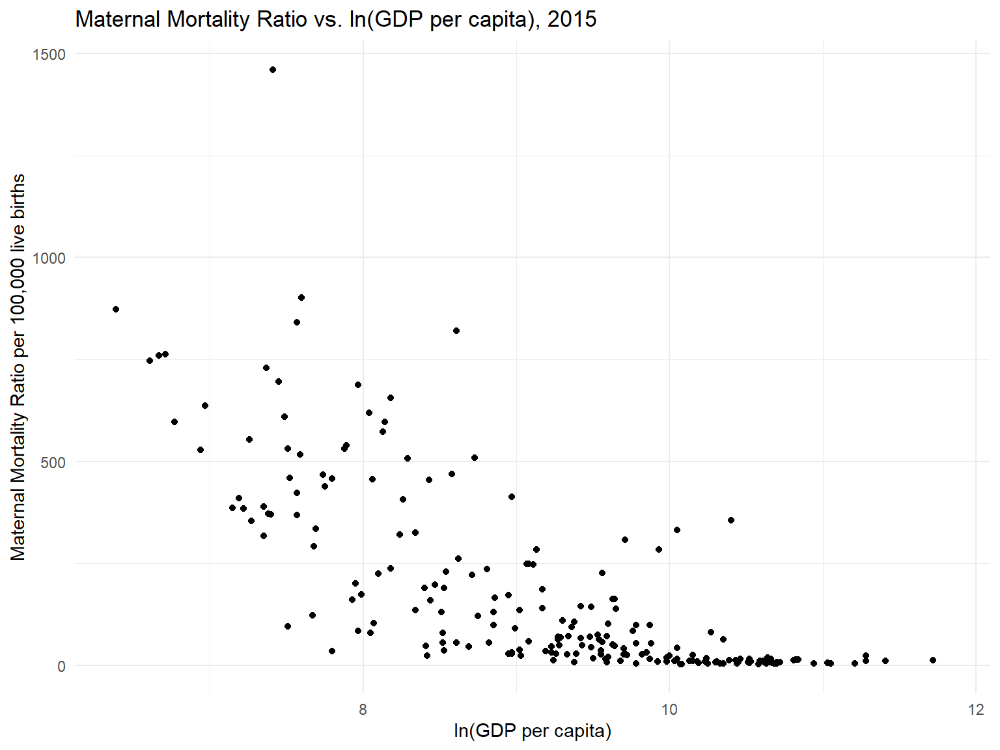

# Maternal Mortality Ratio: number of maternal deaths during a given time period per 100,000 live births during the same time period.
# MMR measures the obsteric risk a women is facing when she is pregnant.
# E.g. 1575 per 100,000 live births (Afghanistan) vs. 5 per 100,000 live births (Sweden) means a women in Afghanistan is facing a 315 times higher risk of maternal death when she is pregnant than a woman in Swedan.
mmr_gdp_capita = read_csv("./data/maternal-mortality-ratio-vs-gdp-per-capita.csv") %>%
janitor::clean_names() %>%
rename(
country = entity,
mmr = maternal_mortality_ratio_deaths_per_100_000_live_births,
gdp_per_capita = gdp_per_capita_international,
gdp = x6) %>%
mutate(
country = as.factor(country),
code = as.factor(code)
) %>%
mutate(
gdp_per_capita = round(gdp_per_capita, digits = 2)
) %>%
filter(year > 2000, year < 2016)
summary(is.na(mmr_gdp_capita$mmr)) # 945 NA, 3435 non-NA## Mode FALSE TRUE
## logical 3435 945summary(is.na(mmr_gdp_capita$gdp_per_capita)) # 845 NA, 3535 non-NA## Mode FALSE TRUE
## logical 3535 845summary(is.na(mmr_gdp_capita$gdp)) # 750 NA, 3630 non-NA## Mode FALSE TRUE
## logical 3630 750# log-transformed 'gdp_per_capita'
# log-transformed
mmr_gdp_capita_log =
mmr_gdp_capita %>%
mutate(
ln_gdp_per_capita = round(log(gdp_per_capita), digits = 2)
)# ggplot (year = 2015): linear + log
mmr_gdp_capita_log %>%
filter(year == 2015) %>%
ggplot(aes(x = gdp_per_capita, y = mmr)) +
geom_point() +
labs(x = "GDP per capita ($)",
y = "Maternal Mortality Ratio per 100,000 live births",
title = "Maternal Mortality Ratio vs. GDP per capita, 2015")
mmr_gdp_capita_log %>%
filter(year == 2015) %>%
ggplot(aes(x = ln_gdp_per_capita, y = mmr)) +
geom_point() +
labs(x = "ln(GDP per capita)",
y = "Maternal Mortality Ratio per 100,000 live births",
title = "Maternal Mortality Ratio vs. ln(GDP per capita), 2015")
x1_template = list(
title = "GDP per capita ($)"
)
x2_template = list(
title = "ln(GDP per capita)"
)
y_template = list(
title = "Maternal Mortality Ratio per 100,000 live births"
)
mmr_gdp_capita_log %>%
filter(year == 2015) %>%
plot_ly(
x = ~gdp_per_capita, y = ~mmr, type = "scatter",
mode = "markers", color = ~country
) %>%
layout(
xaxis = x1_template,
yaxis = y_template,
title = "Maternal mortality ratio vs. GDP per capita"
)mmr_gdp_capita_log %>%
filter(year == 2015) %>%
plot_ly(
x = ~ln_gdp_per_capita, y = ~mmr, type = "scatter",
mode = "markers", color = ~country
) %>%
layout(
xaxis = x2_template,
yaxis = y_template,
title = "Maternal mortality ratio vs. ln(GDP per capita)"
)